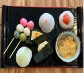
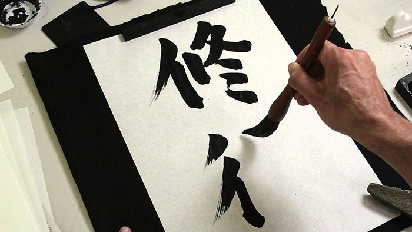

TEAM BONDING


Team bonding is an ongoing process through which teams become closer and build trust and ease of communication. One popular way of helping this process is through positive shared experiences in the form of fun activities. Friendships deepen through sharing experiences and it's the same with teams. These shared experiences can be positive and negative. Often working conditions are sufficient to give these experiences but sometimes the negative can be more common and so a fun team bonding day can help to restore balance. Regularly scheduled team building events can improve your company culture and provide a space to understand your employees’ wants and needs. Sometimes the culture of management doesn’t match up with that of the employees, so finding a middle ground is an important step in creating a more positive environment. Team building activities help to cut out workplace toxicity and get everyone on the same page while working together. The benefits will be sure to follow you back to the office.
- SUSHI CLASS
-  MOCHI CLASS
- ORIGAMI
-  CALIGRAPHY